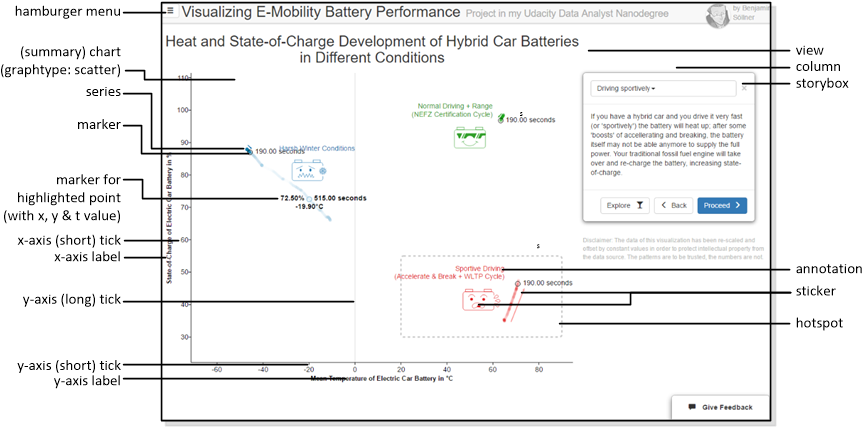
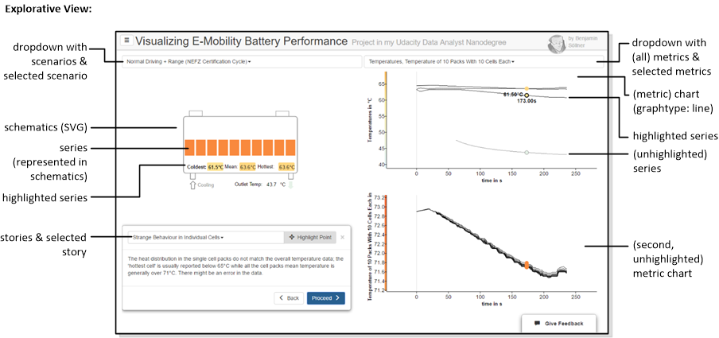

DAND6 JSDoc
DAND6 JSDocIn order to understand the application architecture which is described further below (and also the sourcecode comments) it is useful to know how I formally call / define a few things you see on the screen when using the visualization:
Explanatory View

- Hamburger menu: The main navigation menu; usually the different navigation items in the hamburger menu are reffered to as routes.
- View: one single page from the Hamburger Menu giving one consistent interactive experience to the user
- Column: a vertical slice of the grid inside a view
- Chart: the complete two-dimensional visualization including data points, labels, axis etc. etc. - all managed in D3.js but not including the "Storybox" or "Schematics".
- Summary chart: the chart shown on the Explanatory View which, in our application shows different battery scenarios in an aggregated way.
- Graph: the area of the chart between the two main axes.
- Graphtype: Which kind of chart to draw (scatter/line).
- Series: A set of data values that belongs together, is captured together during an experiment with one metric at one location and can be displayed by one graphical series on the chart. I often use the slightly awkward pig-plural serieses for its plural to make it clear when I am talking about one series or a collection of them.
- Marker: A specially highlighted and labelled data point; a special kind of marker is shown for the data point which you highlight with your mouse.
- t-value: A third dimension besides x and y for scatter plots, usually "time" if time is not used for x and y. In this case, the t-value can be only perceived by appearant "flow" of a line scatter points and examined by hovering over single data points.
- x-/y-axis: Both axes have labels and ticks, whereas I use the term short tick for the part of the tick visible outside of the graph area and long tick for the grid visible on the graph itself. Currently the graph is styled such that only for the origin those grids are shown.
- Sticker: A decorative image or symbol that is mapped into the graph area.
- Annotation: Free-form text floating over the graph area.
- Hotspot: A box highlighting a certain area of the graph for the sake of story telling.
- Storybox: A prominent text box alongside with the chart which supplies the user with a narrative.
Exploratory View

In addition to some terminology from the explanatory scenario, the following terms need to be understood:
- Scenarios & selected scenario: A battery type and battery use case for which data of different metrics was collected during an experiment or simulation. The exploratory view lets you select one from a set of different scenarios.
- Metrics & selected metric: A metric that is collected during a scenario can be, e.g., Voltage, State-of-Charge, Temperature etc. The "metric" in our definition contains all measurements of this metric, potentially at different locations. Metrics can further be subdivided by series(es). A metric can be highlighted if the mouse is moved into the chart of this metric.
- Metric chart: A chart displaying all the series(es) of one metric. The metric chart has the graphtype: line (time-series).
- Series: A single set of data collected for one metric at one location (like the Temperature of a single cell).
- Multiple series(es) of one metric are displayed together in one metric chart using different, overlapping time series lines. A series can be highlighted if the mouse is moved directly on top of its time series line.
- A series is also represented as a shape or primitive in the battery schematics. The associated shape can take the text or color associated with a series's value as the user moves the mouse over the chart.
- Schematics: The facsimile battery representation representing the battery type and scenario. This is a SVG graph with many custom elements that are filled / styled / captioned based on the data series's value.